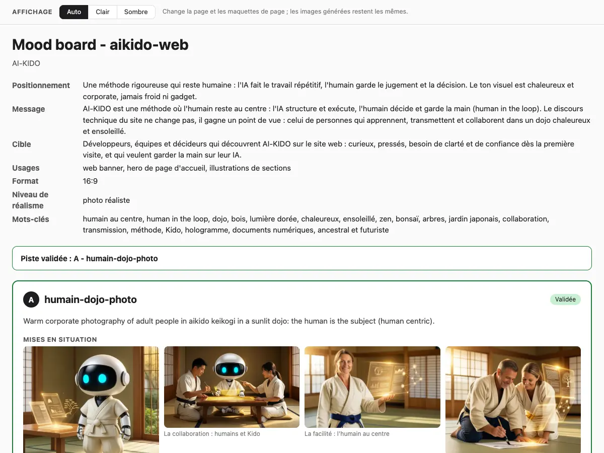
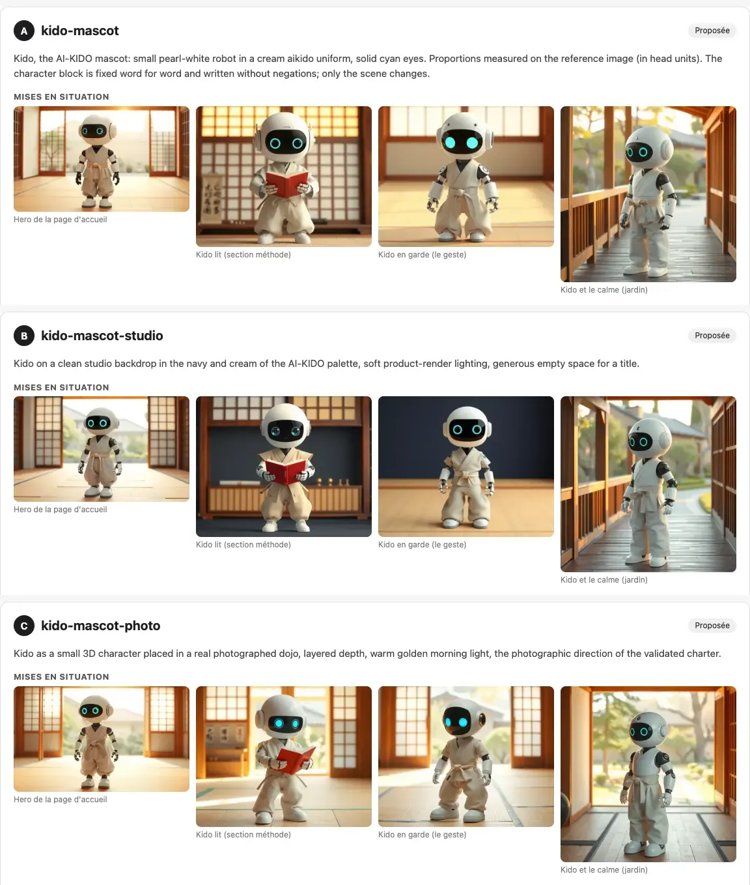
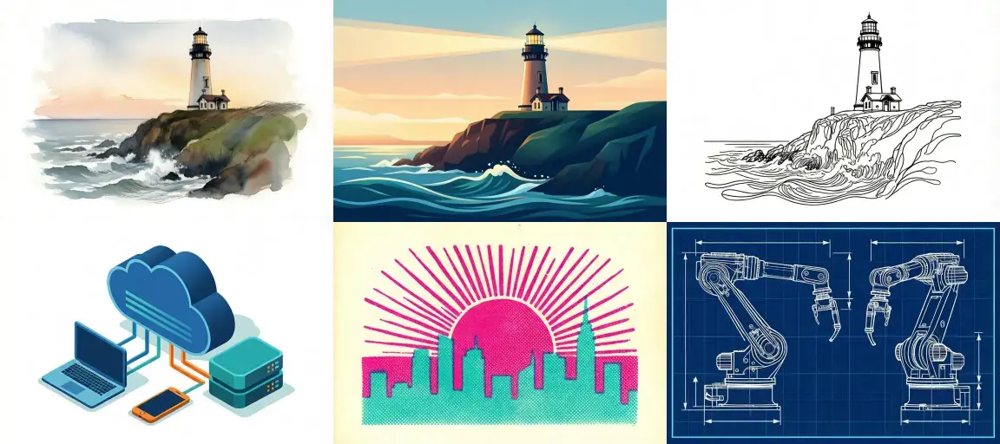
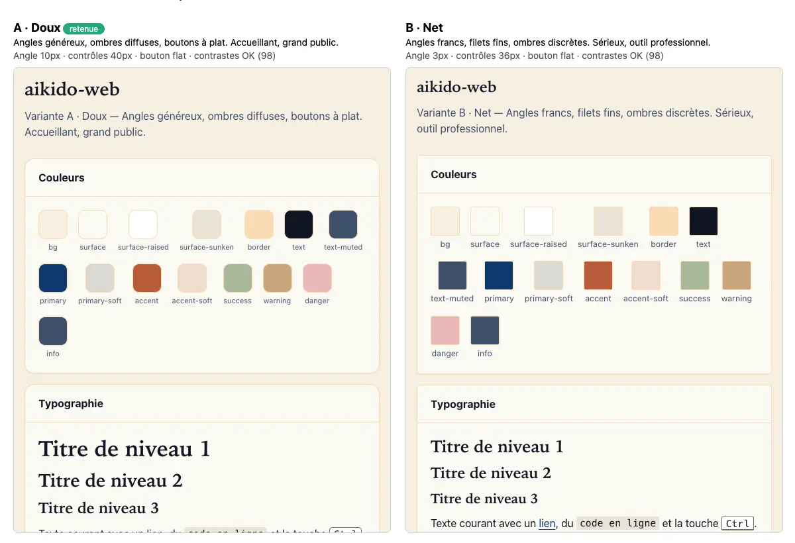

Demandez cinq images à un agent sans direction et vous obtenez cinq styles différents. Local Designer ajoute une étape de décision avant le premier rendu et la conserve, pour que tout le projet parle d’une seule voix visuelle.
L’idée en une image
La compétence transforme un brief en planche d’ambiance, attend votre validation, puis produit les images sur votre machine avec Draw Things. La charte, les planches d’ambiance et le kit d’interface vivent dans un seul dossier de design que vous pouvez versionner avec votre projet.
Du brief au rendu final
- Un brief structuré fixe le message, le public, les usages, la palette, les polices et ce qu’il faut éviter.
- Trois directions sont montrées sur les mêmes scènes, avec palette, typographie et ce que chacune exclut.
- La génération refuse de tourner tant qu’une direction n’est pas validée ou que la charte n’est pas active. La décision et le nom du valideur sont enregistrés.
- D’abord des brouillons rapides, puis une planche-contact gardée hors de Git, puis l’image finale. La graine et le prompt sont sauvegardés pour pouvoir reproduire toute image.
Ce que vous voyez à chaque étape
Vous ouvrez la planche d’ambiance dans votre navigateur et la première chose que vous lisez est votre propre brief, résumé : le message, le public, les usages et le format. En dessous vient la direction validée, montrée sur de vraies scènes plutôt que décrite avec des mots.

Avant cela, on vous avait montré trois directions sur les quatre mêmes scènes. Vous faites défiler A, B et C, vous comparez la lumière, le décor et l’ambiance, puis vous répondez par une lettre et une remarque du type « A, mais moins d’ombres ». Rien n’est dessiné tant que vous ne l’avez pas fait.

Ensuite, vous choisissez la manière dont les images finales sont dessinées. La compétence fournit 29 styles de rendu, chacun avec sa vignette : vous montrez un rendu du doigt au lieu de le décrire. Aquarelle, vecteur plat, trait, isométrique, risographie, plan technique.

Pour l’interface, la page de comparaison du kit d’interface place cinq personnalités côte à côte, sur le même écran et avec les mêmes couleurs de marque. Vous regardez les angles, les ombres et la densité, puis vous décidez avec une seule commande, uikit decide A. Ici, la variante douce A est celle qui est retenue.

Quand une mascotte fait partie du projet, vous obtenez aussi une fiche personnage pour garder toutes les images cohérentes : le même robot vu de face, de trois quarts, de profil et de dos.
Chaque image est lue
Un agent analyste d’images vérifie chaque résultat : défauts, texte, ressemblance à une référence, avant que vous ne le voyiez. Il utilise un modèle de vision local si vous en définissez un, sinon votre modèle courant. Un lecteur peut manquer des défauts : « ok » n’est donc pas une garantie.
Ce qu’elle ne fait pas
Fonctionne sans moteur d’images
- Le brief
- La planche d’ambiance, sans rendus d’essai
- La navigation dans les styles
- Le kit d’interface
- L’analyse d’images
Demande Draw Things sur Mac
- Les brouillons
- Les balayages de réglages
- Le rendu final
À essayer
- Installez la compétence avec le gestionnaire :
/skill-manage get --skill local-designer. - Dans Draw Things, activez le serveur d’API : gRPC sur le port 7859 (recommandé) ou HTTP sur le port 7860.
- Lancez la commande status pour voir le modèle utilisé et si la cible est locale ou distante.
- Écrivez un court brief, comparez les trois directions, validez-en une, puis demandez votre première image.